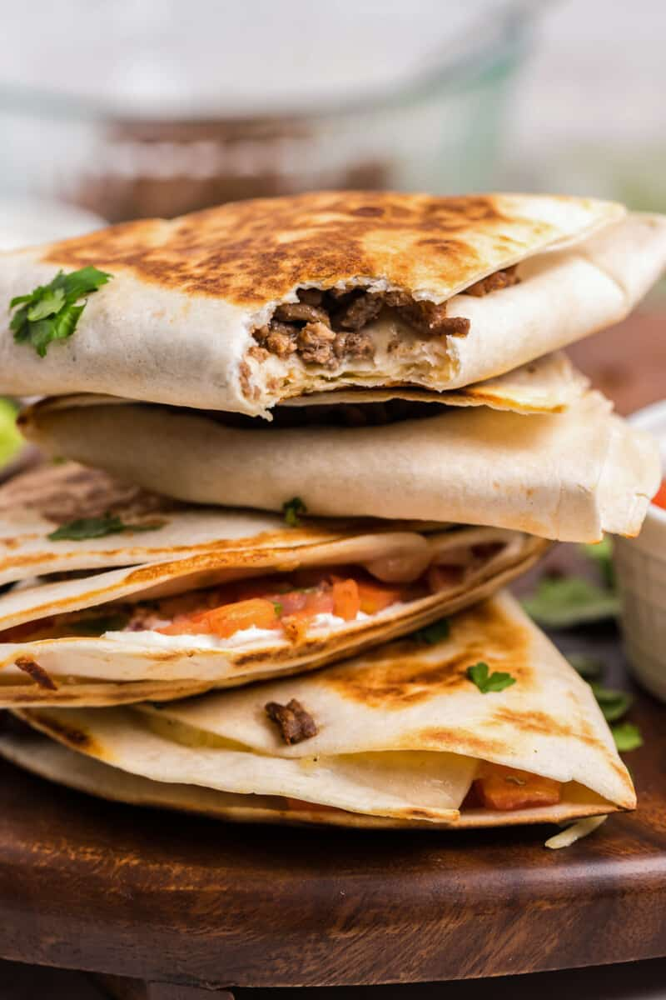

Quesodilla Recipe

Introduction
Hello. I am sure you have an interest in making your very own
quesodilla. Well you are in the right spot! We will
be going over everything you need to make an Authentic Mexican
quesodilla. So get your chef hats on and lets make it up!
Ingredients
- Chicken or Beef
- Cheese
- Tortillas
- Butter
- Tapatio Slow Cooker Packet (optional)
- Pico de Gallo (optional)
Process
In this process I will take you through the steps
to make this quesodilla. I will be using chicken in mine.
Cooked in the crock pot with a Tapatio mixture. Feel free to
use whatever meat makes you happy.
- Cook your choice of meet. You can use precooked meat
from the store or local deli if you prefer, I just happen
to love this slow cooker packet.
- Once your meat is fully cooked, you can prepare your Tortillas
by spreading a thin layer of butter across one side. Once that
is done, you can place it on a pan over med/low heat.
- After you have the tortilla on the pan, add a layer of cheese
first to one half of the tortilla, followed by your choice of meat.
Once that is done cover with more cheese and pull your tortilla
over to form a giant taco shape.